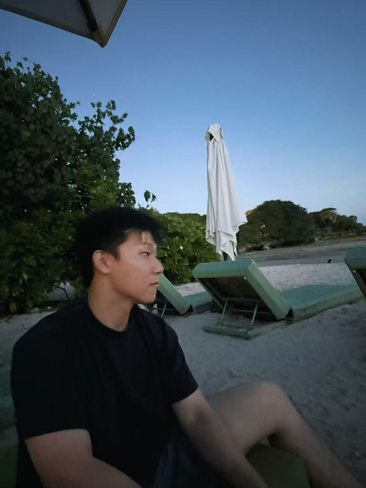
产品设计 · 交互设计 · UX 研究
YEGEN Wu
从 B2B 商业平台到重庆的农田、悉尼的研究室——
我用设计连接真实的人与复杂的系统。
全职产品设计、服务设计、VR 空间界面与交互装置。
所有项目 / All Work
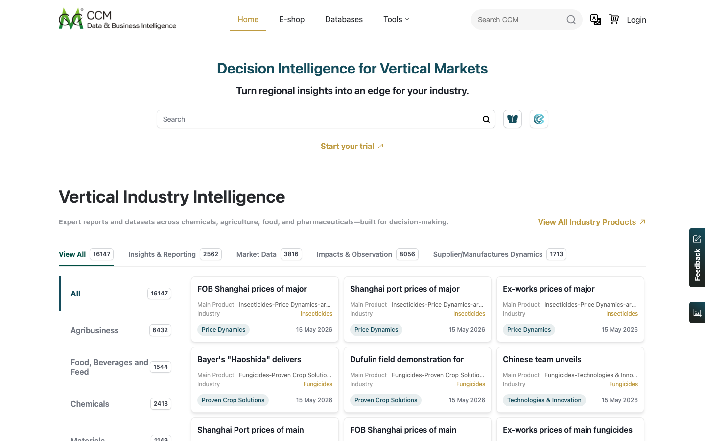
01 · 商业产品 · 全职
CCM 化工情报平台
B2B 化工数据与决策智能平台，UX 链路：注册 → 浏览 → 决策 → 支付
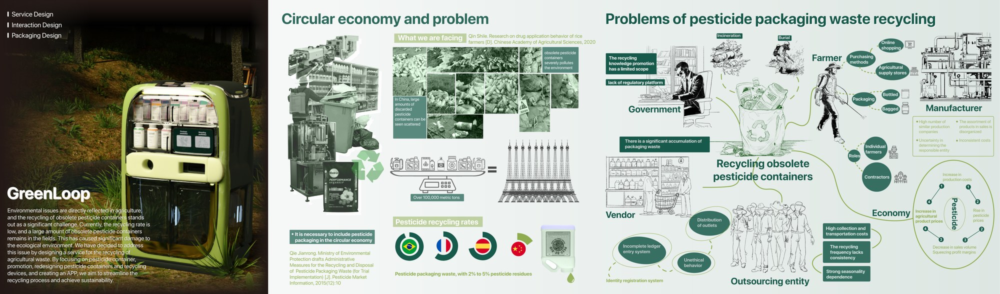
02 · 毕业设计
Greenloop
农药包装废弃物回收服务系统——从田野调研到三条产品线全链路设计
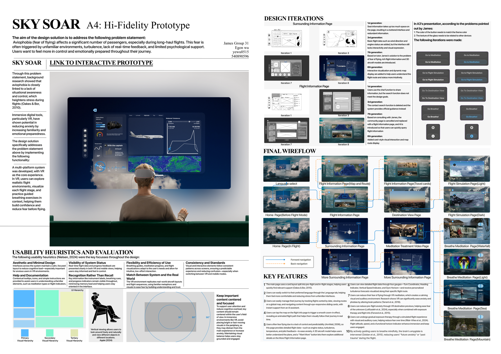
03 · VR 界面
SKY SOAR
飞行焦虑缓解——Apple Vision Pro VR 模块，8 个核心界面从 Wireframe 到 Hi-Fi Prototype
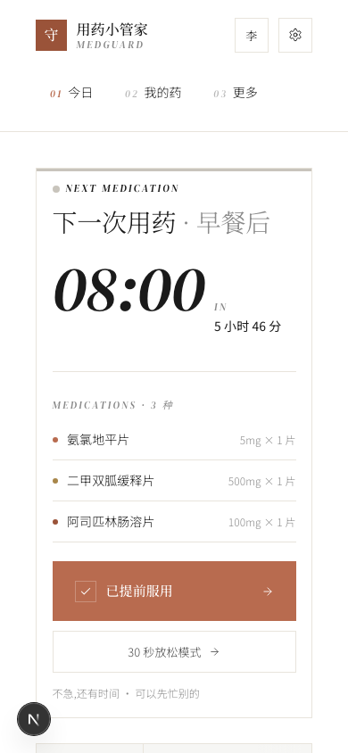
04 · 前端实现
守 MedGuard
慢病用药管理——设计语言 + Next.js 15 全栈实现，Vercel 部署上线
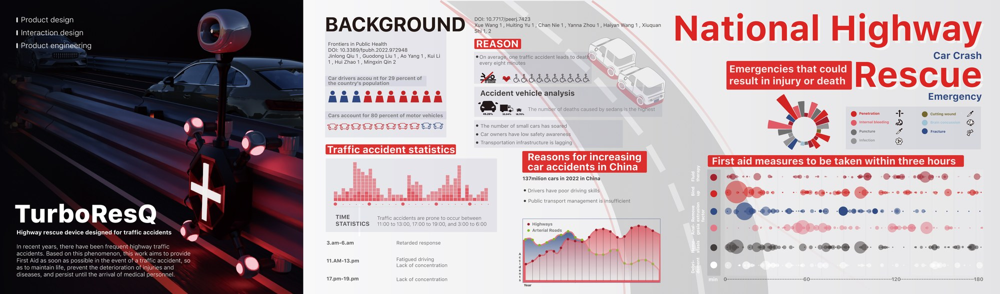
05 · 硬件原型
TurboResQ
高速公路智能救援装置——Arduino 三模式硬件 + Blender 三维 + App UI
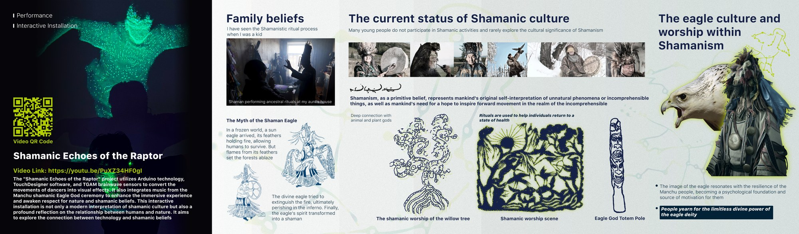
06 · 交互装置
Shamanic Echoes
脑波驱动的萨满仪式沉浸装置——TouchDesigner + Arduino + Kinect2
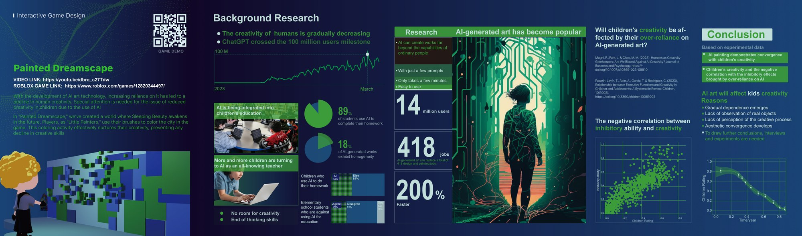
07 · 游戏设计
Painted Dreamscape
对抗 AI 同质化的儿童创造力游戏——Roblox + Blender，公开上线
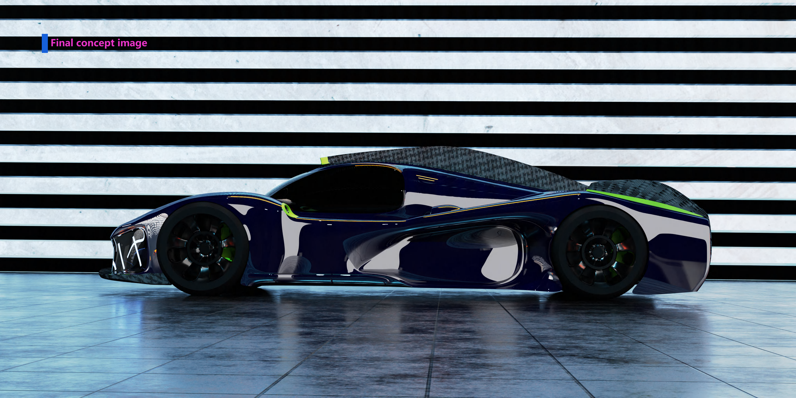
08 · 汽车设计
Lance Lightning
夜行者概念跑车——从骑士头盔汲取灵感，草图推演到最终渲染
09 · AI 工具产品
Scoping Review Skill
为 HCI 研究者构建的学术辅助 AI 工具——自动去重 + PRISMA 校验 + LaTeX 生成
关于我
我是吴业亘（YEGEN Wu），产品设计师，现就读于悉尼大学研究生课程，本科毕业于重庆大学艺术学院产品设计专业。
我的设计从真实问题出发——去农田访谈农户、分析论坛里的恐惧叙事、观察老人如何与手机互动。研究不是流程里的一步，而是所有决策的起点。
设计从用户研究出发，经过概念推导、交互原型，到最终产品落地。涉及的媒介包括 Web 应用、VR 空间界面、Arduino 硬件装置、Roblox 游戏，以及 AI 工具产品。
教育背景
核心能力
化工行业决策情报平台 / cnchemicals.com · 注册 → 浏览 → 决策 → 支付
化工、农业、食品行业的 B2B 采购决策极度依赖行业情报，但现有数据产品大多信息密集、购买路径繁琐——如何让专业买家在海量报告中快速定位所需、完成从发现到付款的完整旅程？
CCM 主页 — Decision Intelligence for Vertical Markets · 化工 / 农业 / 食品 / 医药跨行业情报平台
我的角色
全职产品 / UX 设计师
负责全链路用户体验设计
覆盖链路
注册 / 登录 · 账户体系
浏览 · 搜索 · 筛选
产品详情 · 决策支持
购物车 · 结算 · 支付
产品规模
15,918 条行业情报
化工 / 农业 / 食品 / 医药
全球 B2B 专业用户
线上真实部署
设计过程
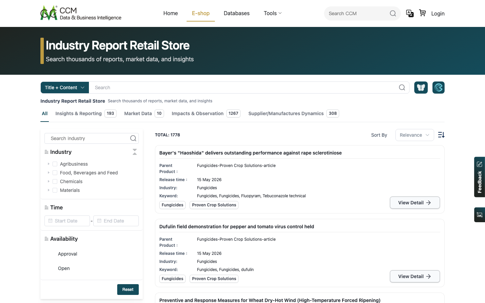
E-shop · Industry Report Retail Store — 四维 Tab 分类 · 行业树形筛选 · 时间范围过滤 · 1778 条报告可购
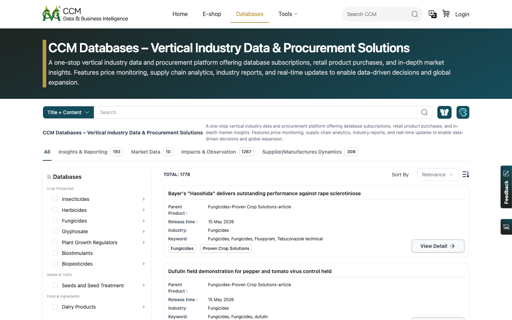
Databases · Vertical Industry Data & Procurement Solutions — 数据库订阅 · 行业报告 · 实时市场数据
核心设计决策
设计成果
农药包装废弃物回收服务系统 / 重庆大学本科毕业设计
2019 年中国农药使用量达 139.1 万吨，废弃物大多随意丢弃于田野——回收率不足 30%，土壤与地下水污染持续加剧。一个完整的系统性缺口，正在等待被设计来解决。
项目概览 — 服务设计 · 交互设计 · 包装设计三位一体
设计过程 / Design Process
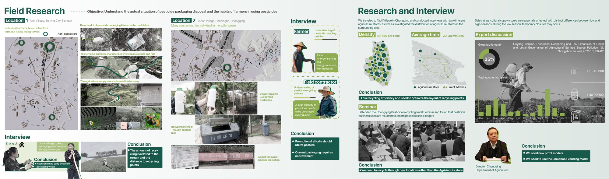
田野调研 — 桃李村实地勘探 · 农户访谈 · 农资店调研 · 政府部门对话
关键研究结论
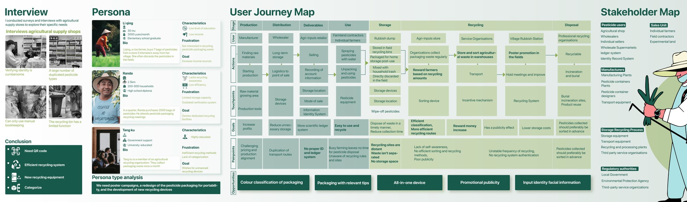
用户画像 · 用户旅程图 · 利益相关者地图 — 完整的研究产出
关键设计决策
旅程图揭示了一个关键矛盾：农户知道应该回收，却没有便捷的路径去执行。基于此，产品设计方向从"教育引导"转向"降低行动门槛"——将回收站整合进购药场景，让回收与购药在同一设备完成，无需农户额外出行。
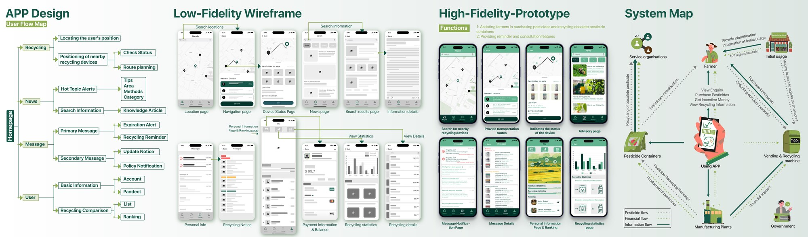
App 设计全过程 — 用户流图 · 低保真线框 · 高保真原型 · 系统地图
高保真 App 界面 — 7 个核心页面
绿色主调色彩系统 · 地图 + 列表 + 消息 + 账户四大模块 · 回收全流程数字可追溯
一体化回收收购装置 — 五面渲染
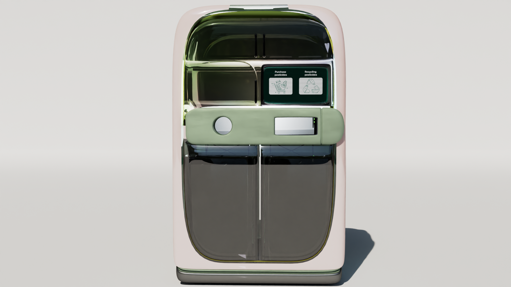
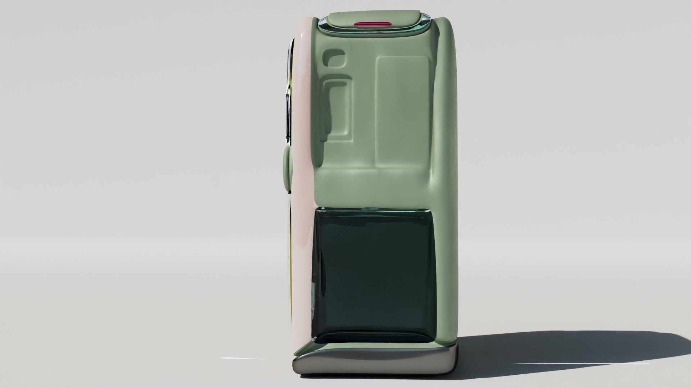
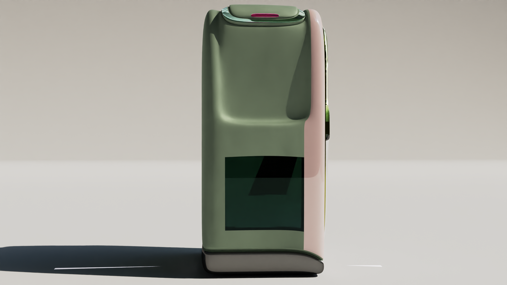
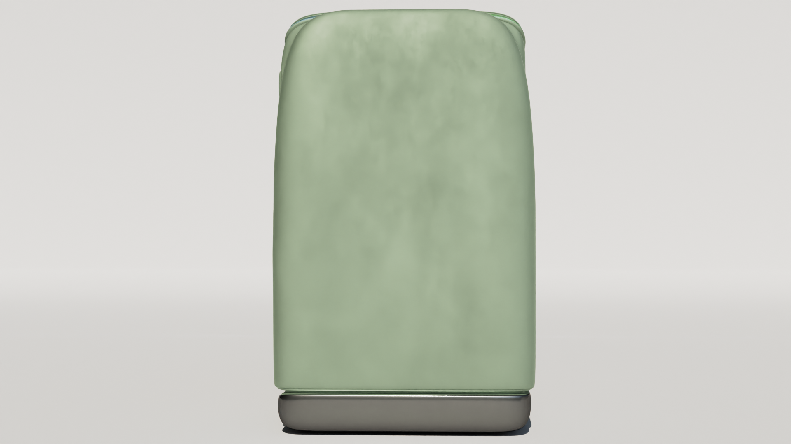
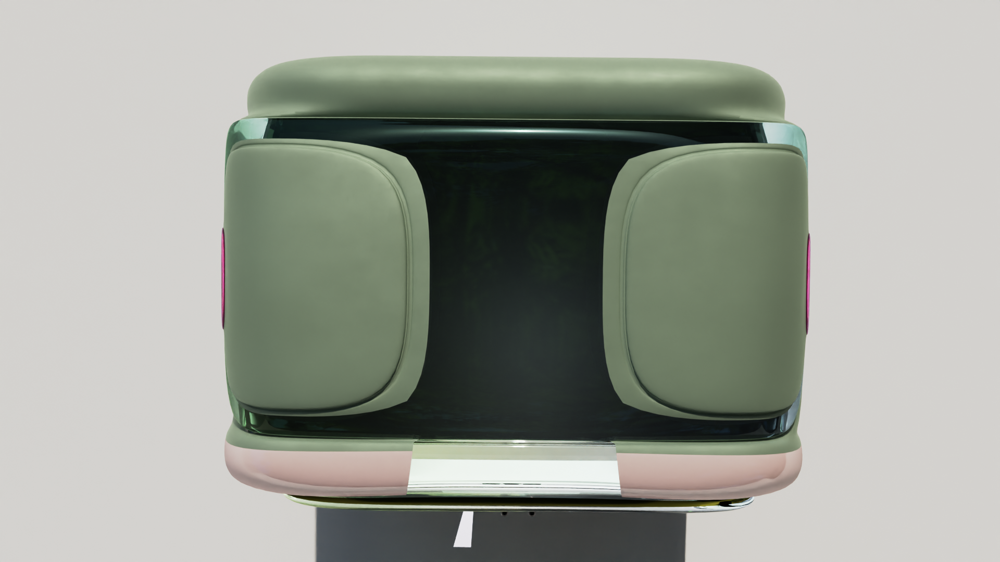
正面 · 左侧 · 右侧 · 后侧 · 顶视 — 一体化购药回收装置，将回收行为嵌入购药场景
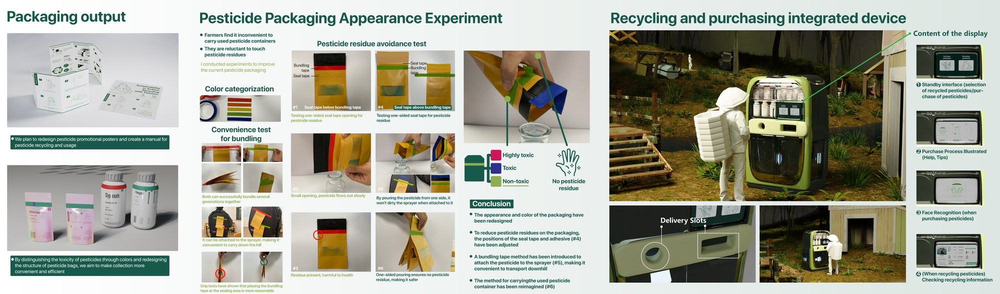
包装重设计 · 外观实验 · 回收装置实景 — 三位一体的系统落地
包装重设计逻辑
通过颜色分类区分毒性等级，设计捆绑胶带开口避免农药残留污染（实验验证单侧开口确保无残留流出），重新设计包装使农户便于携带与归还——让「包装本身」成为回收系统的一部分，而非障碍。
设计成果
飞行焦虑缓解系统 / Apple Vision Pro VR 界面设计
飞行恐惧症（Aviophobia）影响全球约 25% 的旅客，而现有机舱几乎不提供任何情绪支持——乘客在封闭空间、失控感与高空焦虑中独自应对，没有实时的状态反馈，没有有效的干预手段。
为什么这样研究 / Research Rationale
JTBD 分析框架 — 三类用户的核心「待完成任务」
| 用户类型 | Situation（情境） | Motivation（动机） | Expected Outcome（期望结果） |
|---|---|---|---|
| 知情控制型 需要掌握飞行信息来保持平静 |
起飞后感到失控，不知道飞机在哪、飞多快、有无气流 | 通过掌握信息减少未知感，用理性压制恐惧 | 随时查看飞行状态，感觉自己在「参与」飞行，而非被动承受 |
| 注意力转移型 需要分心来避免焦虑螺旋 |
飞机颠簸或长时间飞行，无法集中注意力做其他事 | 用沉浸式内容占据认知资源，打断焦虑思维链 | 在飞行中体验目的地或冥想，飞机降落时回想「其实没那么可怕」 |
| 生理干预型 需要主动调节身体反应 |
心跳加速、手出汗、呼吸急促，明知不危险却控制不住身体 | 通过呼吸、冥想等方式直接干预生理焦虑症状 | 呼吸练习后心率下降，感受到对身体的重新掌控感 |
我的角色
VR 模块界面设计
Apple Vision Pro 全部界面
系统三端
iPhone — 音频引导 · 航班追踪
Apple Watch — HRV 监测 · 冥想
VR — 沉浸式体验（我负责）
课程背景
悉尼大学界面设计课程
A3 最终提案
设计过程
高保真原型全览 — 8 个核心页面 · 设计迭代记录 · 启发式评估文档
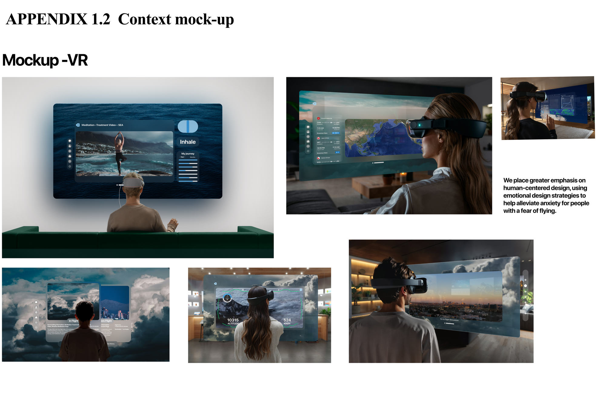
情境 Mock-up — 以人为中心的情感设计策略，在飞行场景中缓解焦虑
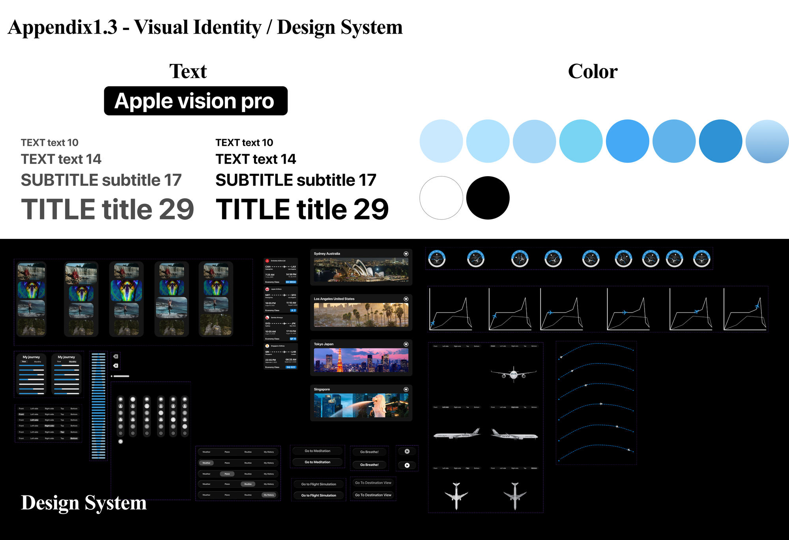
Apple Vision Pro 设计系统 — 蓝色渐变调色板 · 双字重体系 · 深色界面规范
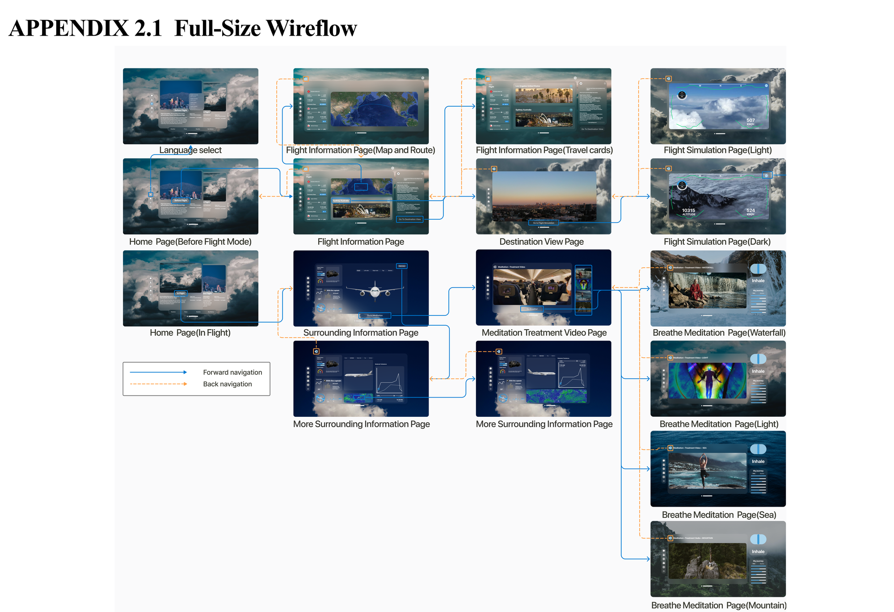
完整 Wireflow — 前向与返回导航清晰标注
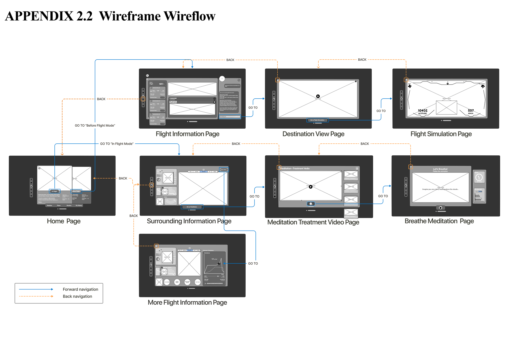
低保真线框 — 7 个页面的布局与导航结构
VR 八大核心界面
双状态首页，根据飞行阶段切换内容。简洁卡片式布局让用户快速找到所需功能，避免焦虑状态下的认知负荷。
实时航班状态、路线地图、当前速度与高度——让乘客对飞行状态保持「知情感」，直接对抗失控感引发的焦虑。
目的地全景图像沉浸展示，将注意力从「当下恐惧」转移至「即将到达的美好」，利用正向预期缓解焦虑。
真实飞行视角模拟，HUD 风格界面显示飞行参数。双色模式适配不同光线偏好，让用户主动「参与」飞行体验。
实时展示飞机三维位置、引擎状态、燃油、高度、气流预报等详细数据，满足高知情需求用户的信息渴望。
情境化冥想视频库，清晰的视频缩略图 + 时长标注，「Go Breathe」按钮进入引导呼吸。修复：增加操作说明 tooltip。
三套自然场景配合 Inhale/Exhale 动画引导，利用视觉沉浸降低生理焦虑反应，进度条显示呼吸节奏。
飞行途经地区的文化、地理、天气信息，用好奇心替代恐惧情绪，为长途飞行提供持续的注意力转移内容。
设计成果
面向中老年慢病患者的用药管理应用 / HCI 课题设计 + 前端实现 · medguard-green.vercel.app
慢病患者用药依从率长期低于 50%，现有的提醒类工具大多设计冷漠、信息密集，对中老年用户形成认知障碍——「按时吃药」应该是件简单、温暖、不焦虑的事。
设计过程
设计语言 · 色彩系统
字体：标题 Noto Serif SC + DM Serif（衬线体，增加温暖感），正文轻量无衬线。规则：无圆角、无投影，靠 1px 边框分隔信息层级——刻意回避医疗类 App 的冰冷视觉语言。
三大核心页面 · 实机截图（Next.js 实现）
真实运行界面 — Next.js 15 + TypeScript + Tailwind CSS 独立开发
Hero 区显示下次用药时间；时间线展示 4 个服药时段（早/午/晚/睡前）；一键打卡自动减少库存；全部完成后进入 30 秒沉浸呼吸放松（配音乐）
添加药品（真实表单）；库存随打卡自动减少；续方复诊月历；点击日期标记/改期/删除；「加入日历」下载 .ics 文件（iOS / Outlook / Google 全兼容）
邀请链接一键生成；家人可查看打卡进度、库存风险、漏服提醒；隐私保护——家人看不到具体药品名称和处方内容
7 天依从率趋势图；每日个性化建议（如「把午餐后用药提前 8 分钟」）；一键采纳建议，时间线立刻更新；数据仅存本地，不上传服务器
设计成果
高速公路智能救援装置 / 产品设计 + 硬件原型
高速公路事故黄金救援时间约 1 小时，但专业救援平均到达需要 20 分钟以上——这段空白期，没有任何有效的现场早期干预手段，每分钟都在消耗生存概率。
TurboResQ — 项目总览与概念说明
设计过程
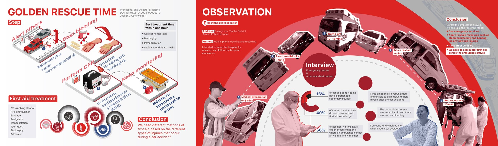
场景研究 · 黄金救援时序分析
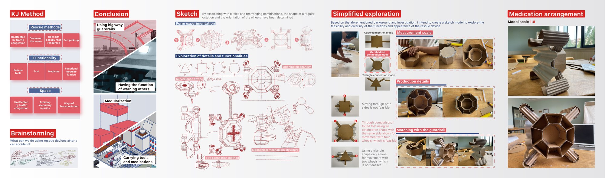
KJ 分析 · 概念草图 · 纸模型迭代
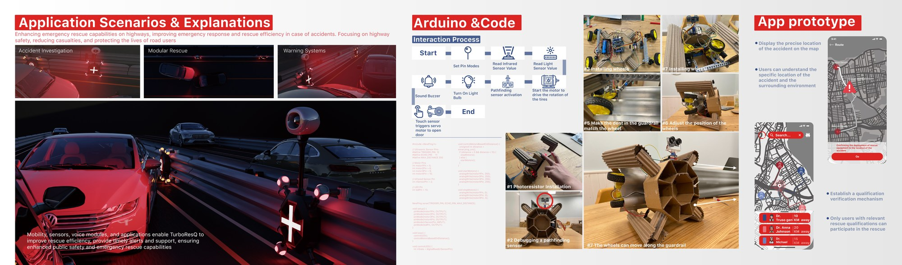
Blender 三维模型 · 三种救援模式
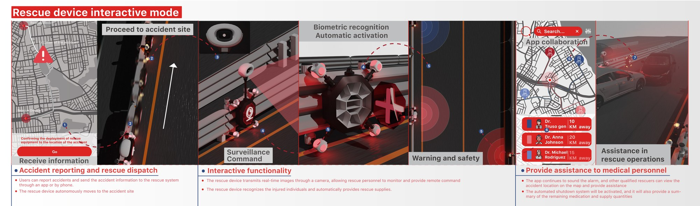
7 步使用流程 · App 联动场景模拟
设计成果
实验性项目 / Experimental Work
以下两个项目探索技术与艺术的边界——一个让脑电波成为艺术语言，一个用游戏对抗 AI 同质化。
of the Raptor / 脑波驱动的萨满仪式互动装置
如何让萨满鹰神仪式中的意识状态，通过当代技术转化为观众可感知的沉浸性体验？
萨满鹰神交互装置 · 项目总览
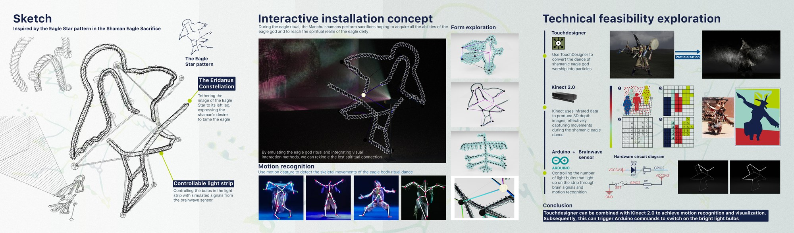
以鹰神图腾为灵感的装置素描
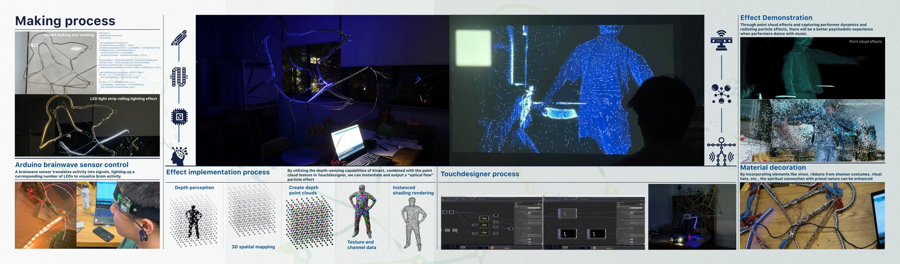
铁艺装置制作 · 脑波传感器调试
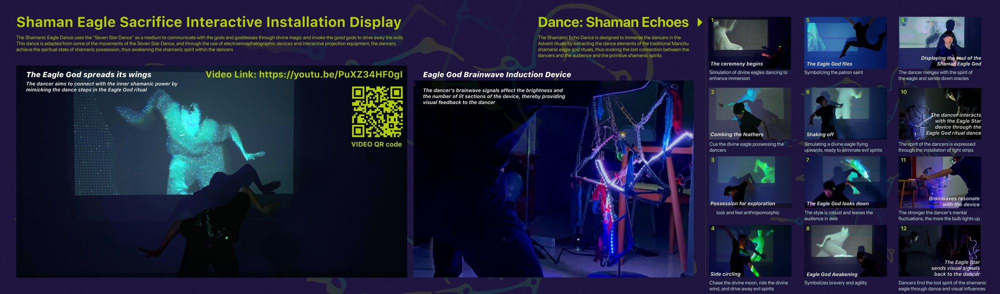
现场演出 · 舞者动作触发实时视觉
技术栈
TGAM 脑波传感器
Arduino 控制光带
Kinect2 体感追踪
TouchDesigner 实时视觉
投影映射
设计逻辑
研读萨满意识文献，提炼激活鹰神连接的仪式方法；以铁艺装置承载灵性意象；舞者动作 + 观众脑波双重输入，制造多层次沉浸层叠感
视频记录
youtu.be/PuXZ34HF0gI
完整演出记录，包含装置互动过程与实时视觉效果
对抗 AI 同质化的儿童创造力游戏
AI 艺术工具的广泛普及正在削弱儿童的原创想象力——过度依赖 AI 生成图像，导致人类的色彩感知与创造意愿逐步退化。
Painted Dreamscape · 游戏设计总览
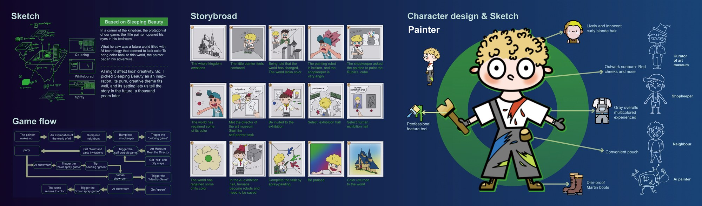
关卡设计 · 小画家角色设定
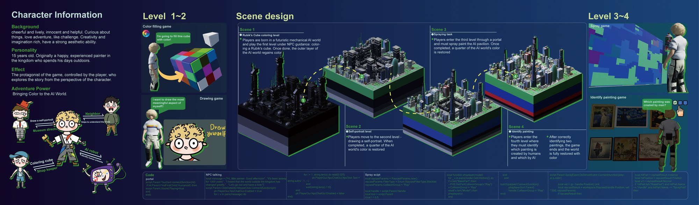
Blender 场景建模 · 四个关卡可视化
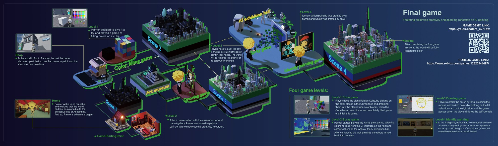
Roblox 引擎实现 · 游戏全流程
4 个关卡
Level 1 · 色彩填充
Level 2 · 绘画接龙
Level 3 · 场景重建
Level 4 · 自由创作
研究驱动
访谈证实 AI 对儿童想象力的影响；儿童绘画实验提供实证数据；基于《睡美人》构建游戏叙事，证据驱动而非假设驱动
上线链接
Roblox 公开发布
youtu.be/dbro_c27Tdw
夜行者概念跑车设计 / 从草图推演到最终渲染
为夜间独行者设计一台跑车——不是张扬的速度象征，而是流线型的追逐工具：夜色中的猎影，骑士护甲下的力量感，沉默而凌厉。
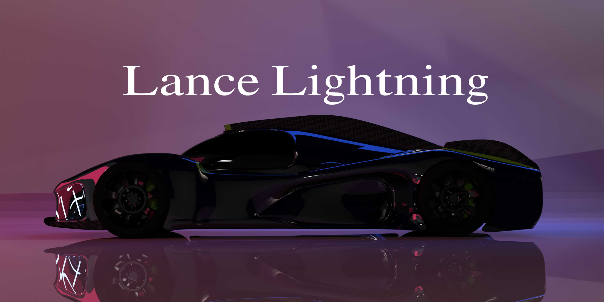
Lance Lightning — 概念跑车设计
设计推演过程
Stage 1 · Racing Night 概念
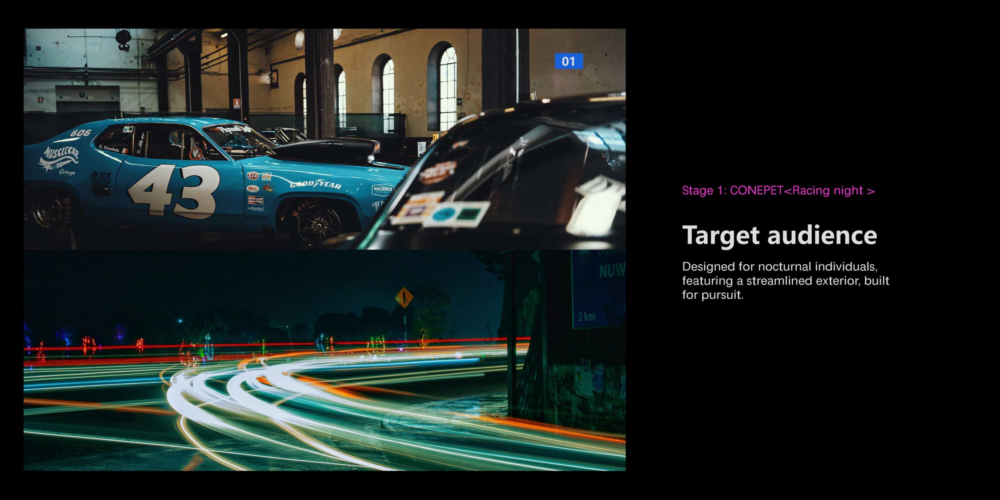
Stage 1 — Racing Night · 夜行者概念草图与主题定义
Stage 2 · Knight's Helmet 灵感
灵感转化逻辑
从马鬃与赛马中汲取动态张力，融合中世纪骑士头盔的结构设计元素——将甲胄的力量感与流线美学转化为车身曲面的收束与释放，赋予车型「庄重而凌厉」的气质。
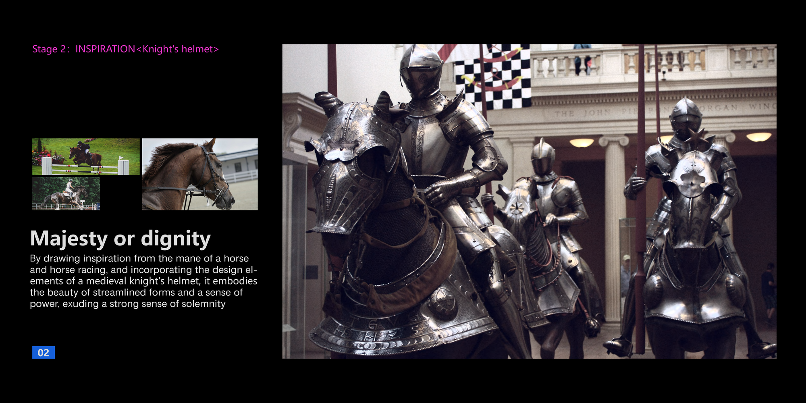
Stage 2 — Inspiration · 骑士头盔灵感转化 · 流线形态的力量感与庄重感
Stage 3 · 草图推演
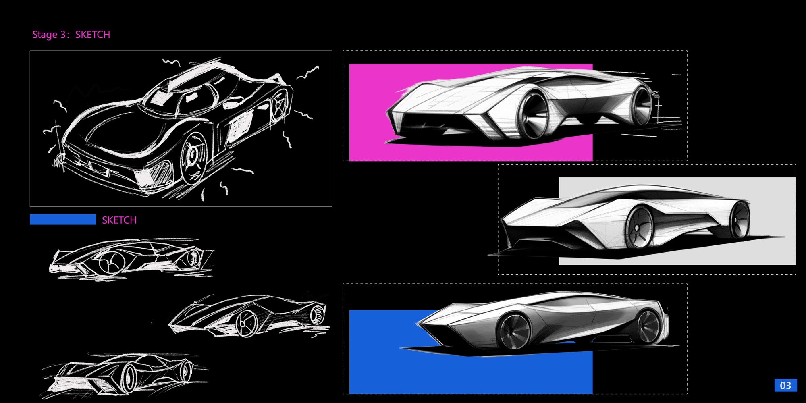
多视角手绘草图 — 侧视图形态推演
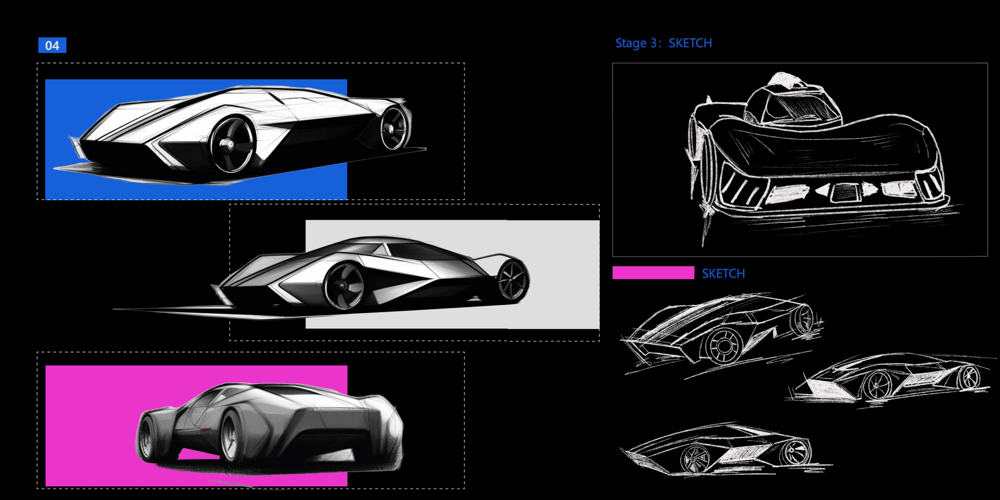
细节推敲 — 车头造型 · 灯组设计 · 曲面关系
最终概念渲染
Final Concept — 正侧面渲染 · 流线车身 · 骑士甲胄美学
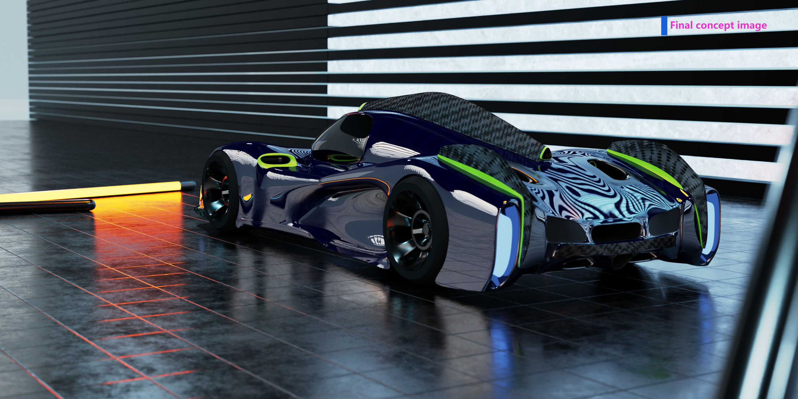
四分之三视图 — 车头 · 引擎盖线条
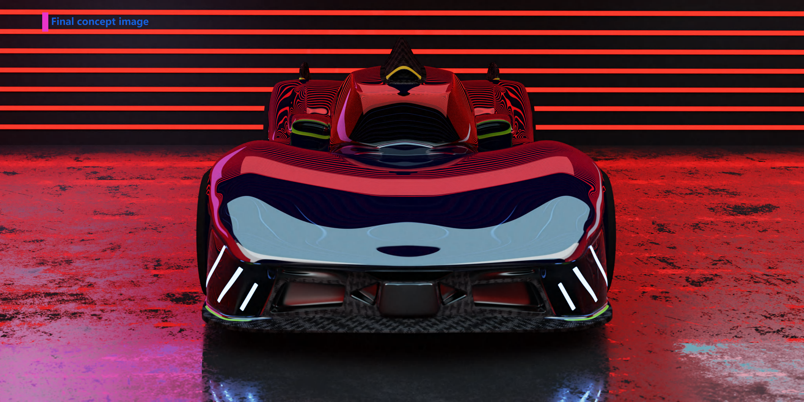
后视图 — 尾部造型 · 排气布局
设计成果
为 HCI 研究者构建的 AI 学术辅助工具 / github.com/TRUSOGEN/scoping-review-skill
学术 scoping review 的写作流程繁琐且容易出错——多数据库手动去重、PRISMA 数字对不上、research questions 无法落地到 data charting、Results 与 Discussion 边界模糊。这不是研究者的问题，是工具链的缺失。
产品背景
作为 HCI 研究方向的学生，我在参与 scoping review 写作时发现：研究者花大量时间在机械性工作上（去重、数字校验、格式转换），而这些完全可以被自动化。同时，AI 写作工具的最大风险是「编造证据」——我决定把「不编造」设计为 skill 的核心约束，而非一条补充说明。
产品设计过程
文件架构（产品结构设计）
SKILL.md — 主入口，完整工作流与触发逻辑（2000+ 行）
review-framework.md — RQ 设计、搜索策略、三阶段筛选、charting schema
evidence-discipline.md — 证据约束规则，防止 overclaim
acm-latex-rules.md — ACM/Overleaf LaTeX 格式规范（含图表模板）
rq-synthesis-patterns.md — RQ-based Results 写作模板
submission-checklist.md — CHI / IMWUT 投稿检查清单
deduplicate.py / prisma_flow.py — 自动化脚本，支持 Claude Code 直接调用
设计成果